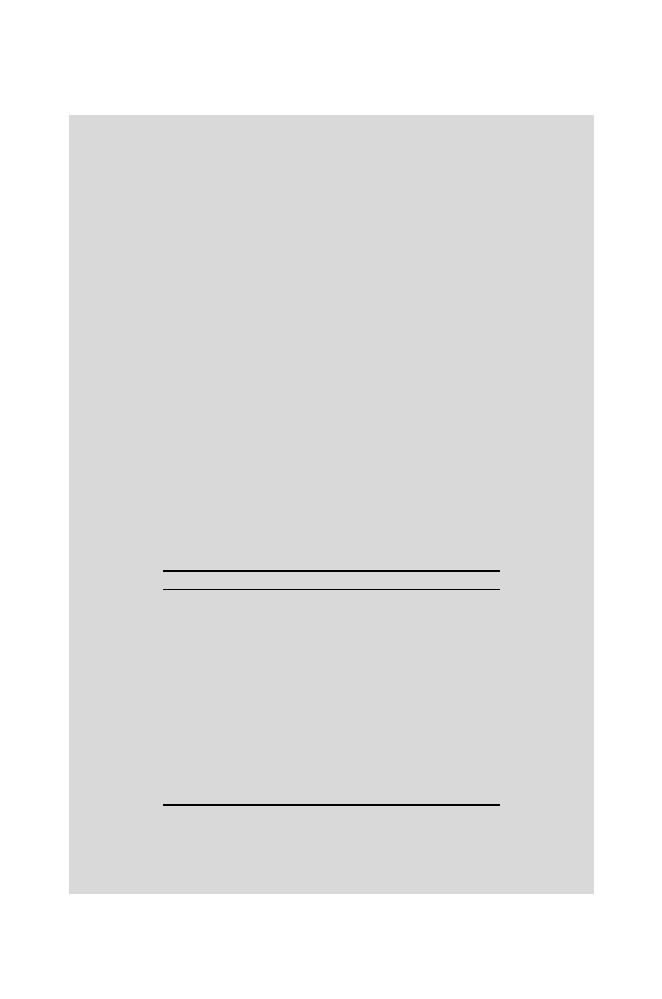

92
3 Word Distributions and Occurrences
> prom.count<-Ncount4(ec.prom,4)
> sum(prom.count$tcount)
[1] 2352
The last two lines verify that the expected number of words have been counted:
48
×
49 = 2352. Note that since two items are being returned from the com-
putation, we must specify which item in the list we require; in this case,
prom.count$tcount
. The most frequently occurring word appears 33 times:
> max(prom.count$tcount)
[1] 33
We find that ten words appear more than 20 times in this set of promoter
sequences:
>(1:256)[prom.count$tcount[prom.count$tcount[,,,]>20]]
[1] 23 22 21 21 23 24 24 25 22 33
By inspection, we identify these words in the output of the array contents and
tabulate the result in Table 3.2. Expected values are taken from corresponding
elements of
expect4
.
Table 3.2.
Observed and expected
k
-word frequencies in
E. coli
promoter sequences
for
k
= 4. Expected values were computed under the iid null model where
p
A
=
p
T
=
0
.
246 and
p
G
=
p
C
= 0
.
254. Only the ten most abundant words, based on the total
number of apperances in all promoter sequences, are shown. Example promoter
sequences are shown in Table 9.2.
Word
Observed frequency
Expected frequency
TTTT
33
8.6
CATT
25
8.9
AATT
24
8.6
TAAT
24
8.6
ATTG
23
8.9
TGAA
23
8.9
ATAA
22
8.6
ATTT
22
8.6
TTTA
21
8.6
ATTC
21
8.9
These results suggest that promoters have unusual word composition com-
pared with the iid null model. These words are composed mostly of
A
s and
T
s, the most frequent letters in the promoter set. We must determine whether
these elevated abundances are statistically significant.